Project 3: Image Stitching and Homographies
Deliverable 1: Projective Transformation Examples
The image sets used for mosaic creation inherently exhibit projective transformations, as they were captured by rotating the camera around a fixed center of projection. This transformation allows planar features to be mapped between the images via a homography. Below are two clear examples of these input image pairs.
Set 1: Middle and Left

Source Image: Middle
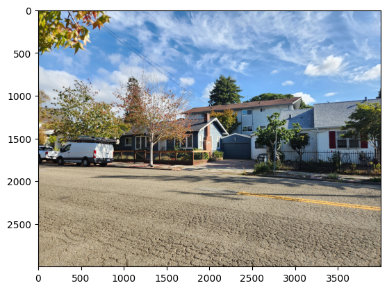
Source Image: Left
Set 2: Middle and Right
Source Image: Middle

Source Image: Right
Deliverable 2: Homography Computation (DLT)
To perform the transformation, we must find sets of points between the two images that correspond with each other. We can then take these points and perform a least squares optimization to find the 8 unknowns necessary for the projective transformation. Due to the 8 degrees of freedom, at least 4 corresponding pairs are needed.
Correspondence Visualization: Middle to Left
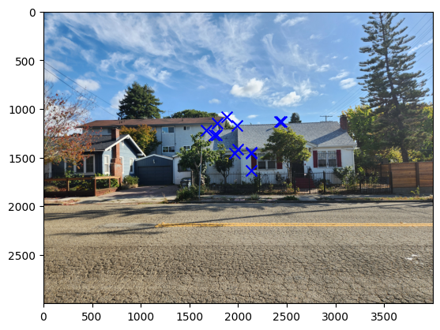
Image 1 Source Points
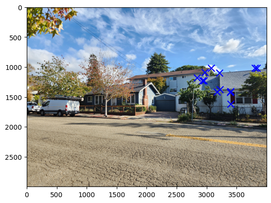
Image 2 Source Points
System of Equations
For each correspondence two linear equations are formed, contributing two rows to the A. With N points, A is 2N x 9. We solve Ah = b where h is the vectorized homography matrix and b is the points on the resulting plane.
System of Equations: [[ 2137 1631 1 0 0 0 -7267937 -5547031] [ 0 0 0 2137 1631 1 -3464077 -2643851] [ 2132 1458 1 0 0 0 -7236008 -4948452] [ 0 0 0 2132 1458 1 -3029572 -2071818] [ 1962 1453 1 0 0 0 -6231312 -4614728] [ 0 0 0 1962 1453 1 -2782116 -2060354] [ 2136 1445 1 0 0 0 -7260264 -4911555] [ 0 0 0 2136 1445 1 -3005352 -2033115] [ 1998 1411 1 0 0 0 -6435558 -4544831] [ 0 0 0 1998 1411 1 -2737260 -1933070] [ 1753 1270 1 0 0 0 -5132784 -3718560] [ 0 0 0 1753 1270 1 -2149178 -1557020] [ 1777 1270 1 0 0 0 -5249258 -3751580] [ 0 0 0 1777 1270 1 -2178602 -1557020] [ 1676 1220 1 0 0 0 -4761516 -3466020] [ 0 0 0 1676 1220 1 -1970976 -1434720] [ 1991 1167 1 0 0 0 -6397083 -3749571] [ 0 0 0 1991 1167 1 -2188109 -1282533] [ 2428 1129 1 0 0 0 -9250680 -4301490] [ 0 0 0 2428 1129 1 -2471704 -1149322] [ 2446 1129 1 0 0 0 -9385302 -4331973] [ 0 0 0 2446 1129 1 -2490028 -1149322] [ 1789 1143 1 0 0 0 -5311541 -3393567] [ 0 0 0 1789 1143 1 -1946432 -1243584] [ 1881 1084 1 0 0 0 -5793480 -3338720] [ 0 0 0 1881 1084 1 -1912977 -1102428]]
Recovered Homography Matrix
array([[ 4.61582404e-01, -3.46020861e-02, 1.42753140e+03], [-2.02184026e-01, 7.84847105e-01, 2.75688043e+02], [-1.36082873e-04, -9.75224682e-06, 1.00000000e+00]])
Correspondence Visualization: Middle and Right
Image 1 Source Points
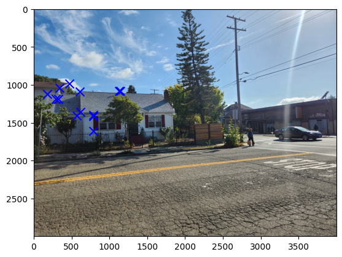
Image 2 Source Points
System of Equations
System of Equations: [[ 2137 1631 1 0 0 0 -1688230 -1288490] [ 0 0 0 2137 1631 1 -3436296 -2622648] [ 2132 1458 1 0 0 0 -1673620 -1144530] [ 0 0 0 2132 1458 1 -3021044 -2065986] [ 1962 1453 1 0 0 0 -1122264 -831116] [ 0 0 0 1962 1453 1 -2762496 -2045824] [ 2136 1445 1 0 0 0 -1687440 -1141550] [ 0 0 0 2136 1445 1 -2994672 -2025890] [ 1998 1411 1 0 0 0 -1234764 -871998] [ 0 0 0 1998 1411 1 -2719278 -1920371] [ 1753 1270 1 0 0 0 -506617 -367030] [ 0 0 0 1753 1270 1 -2079058 -1506220] [ 1777 1270 1 0 0 0 -579302 -414020] [ 0 0 0 1777 1270 1 -2107522 -1506220] [ 1676 1220 1 0 0 0 -300004 -218380] [ 0 0 0 1676 1220 1 -1880472 -1368840] [ 1991 1167 1 0 0 0 -1218492 -714204] [ 0 0 0 1991 1167 1 -2164217 -1268529] [ 2428 1129 1 0 0 0 -2736356 -1272383] [ 0 0 0 2428 1129 1 -2627096 -1221578] [ 2446 1129 1 0 0 0 -2803116 -1293834] [ 0 0 0 2446 1129 1 -2646572 -1221578] [ 1789 1143 1 0 0 0 -608260 -388620] [ 0 0 0 1789 1143 1 -1862349 -1189863] [ 1881 1084 1 0 0 0 -880308 -507312] [ 0 0 0 1881 1084 1 -1845261 -1063404]]
Recovered Homography Matrix
array([[ 2.26012095e+00, -2.57655728e-02, -3.48518988e+03], [ 4.84186050e-01, 1.78586762e+00, -1.29814351e+03], [ 3.19000577e-04, -2.05911307e-05, 1.00000000e+00]])
Deliverable 3: Image Warping (Nearest Neighbor vs. Bilinear)
Once you have the complete homography, you can project between the two images using the found H matrix or H inverse matrix. To properly do this, you must apply the inverse to the resulting image and interpolate to account for the extra information that is "created." This can be done by bilinear interpolation or nearest neighbor interpolation. Both are very accurate, producing good results that are not distronguishable by the untrained eye. However bilinear interpolation took sightly longer than nearest neighbors, motivating me to suggest using nearest neighbors when working with high res images like I did. We can also do this to perform rectifications. Not only can we map an image onto the plane of another image, but we can also select certain features, like rectangular ones, and transform them in a way that makes them more legible.
Projected Images
Middle to Left
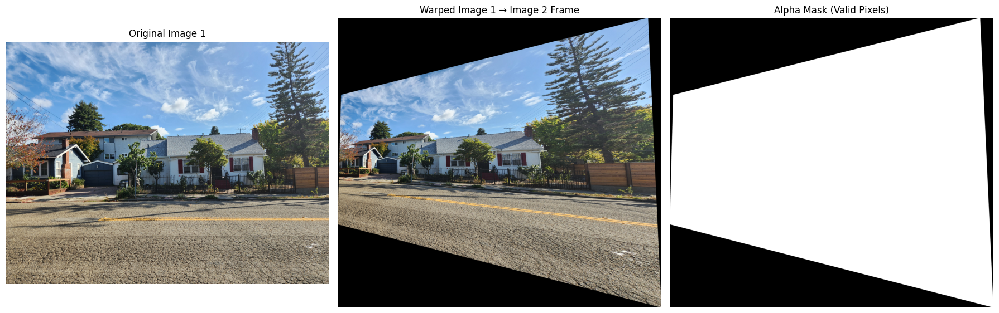
Middle to Right
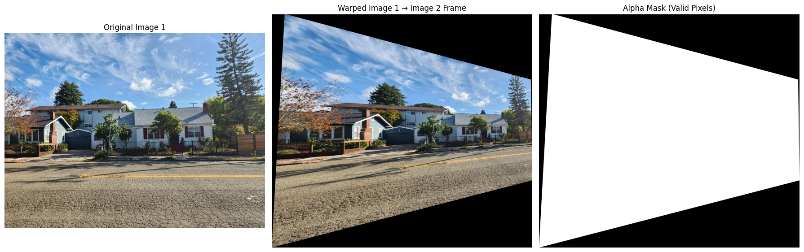
Rectification Comparison: Nearest Neighbor vs. Bilinear
Image 1 Rectification: Book
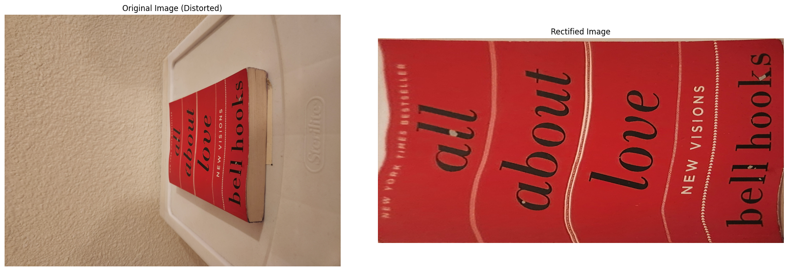
NN Result
Bilinear Result
Image 2 Rectification: Tissue Box
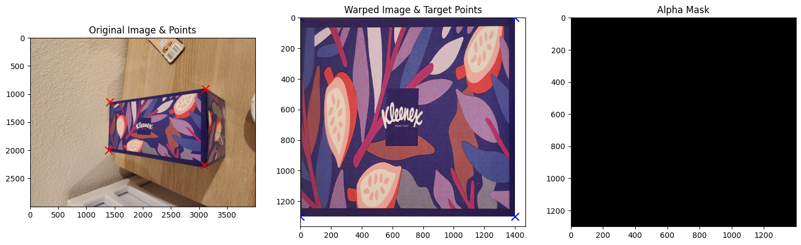
NN Result
Bilinear Result
Image 3 Rectification: Folder
NN Result
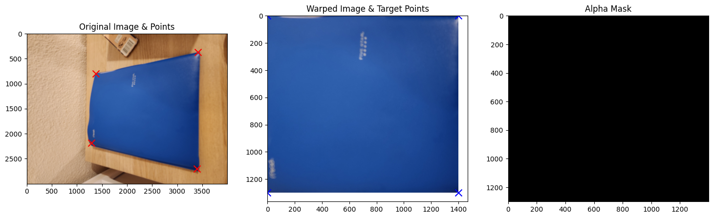
Bilinear Result
Deliverable 4: Image Mosaics and Blending
Three image mosaics were created by stitching together pairs of source images. We do this by leaving the middle image the way it is and transforming the left and right images onto the middle image. Weighted averaging (feathering) was employed in the overlapping regions to significantly reduce visible edge artifacts and create a seamless transition between images.
Mosaic Example 1: First Mosaic
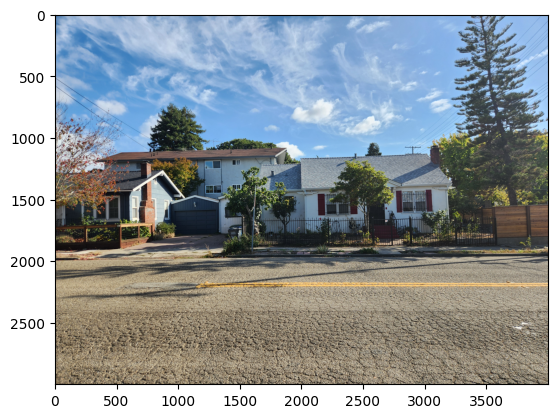
Source 1

Source 2
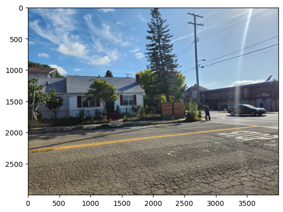
Source 3
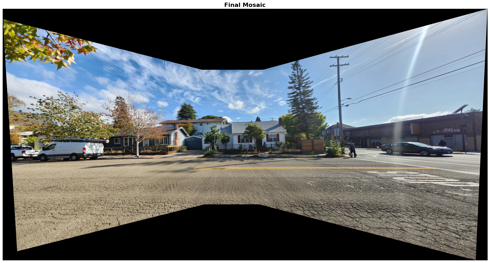
Final Mosaic
Mosaic Example 2: Second Mosaic
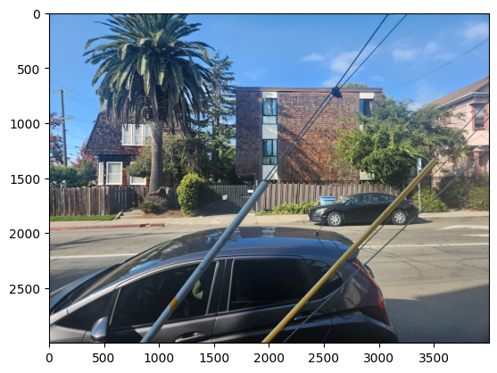
Source 1
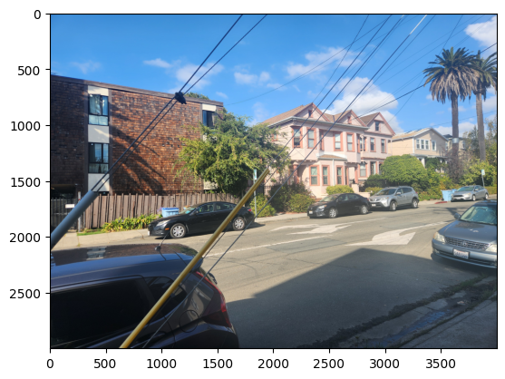
Source 2
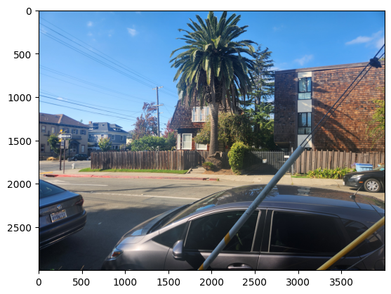
Source 3
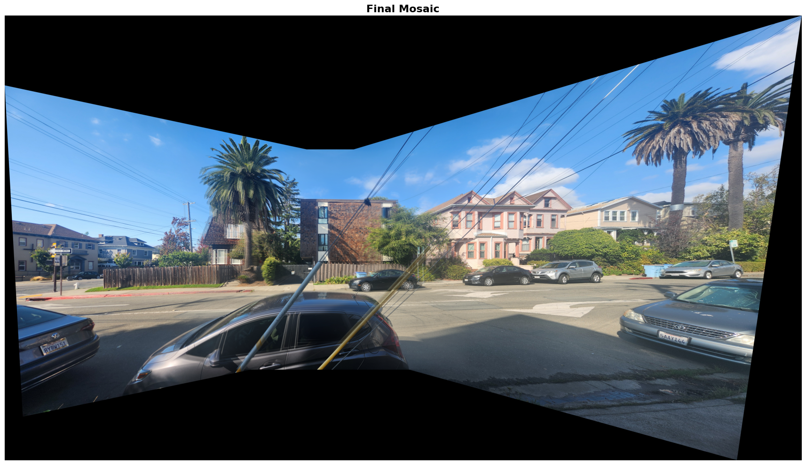
Final Mosaic
Mosaic Example 3: Third Mosaic
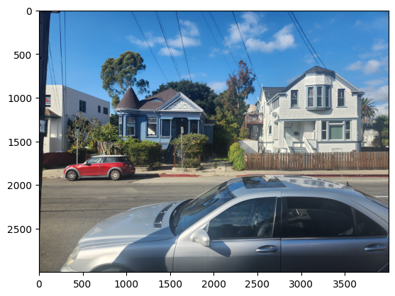
Source 1
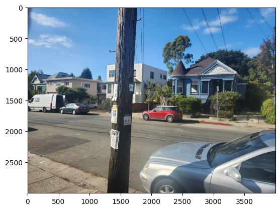
Source 2
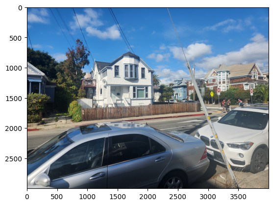
Source 3
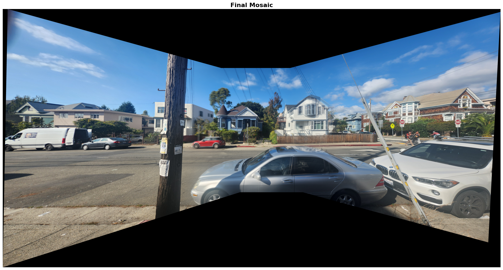
Final Mosaic
Deliverable 5: RANSAC-Based Panorama
To create a more robust panorama, the **RANSAC** (Random Sample Consensus) algorithm was used to estimate the homography matrix from automatically detected and matched feature points. This approach handles **outliers** (incorrect matches) much better than manually selecting correspondences. The pipeline involves **Harris Corner Detection**, **Adaptive Non-Maximal Suppression (ANMS)** for keypoint selection, feature description (e.g., SIFT or similar), and then RANSAC for robust homography calculation. The images below illustrate the key stages and the final automatic panorama.
Feature Detection and Keypoint Selection
Harris Corners
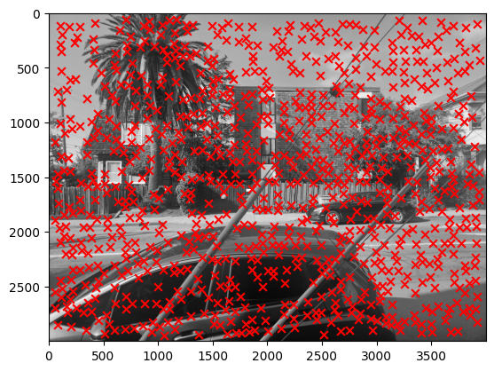
Harris Corners
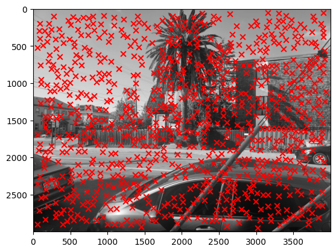
Harris Corners
Harris Corners
ANMS Keypoints
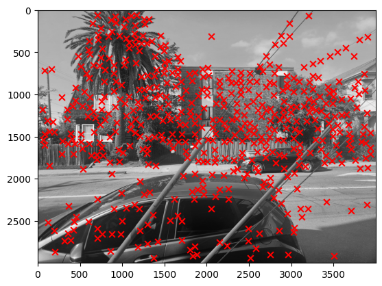
ANMS Keypoints
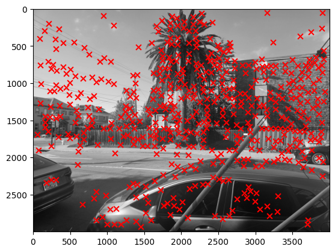
ANMS Keypoints
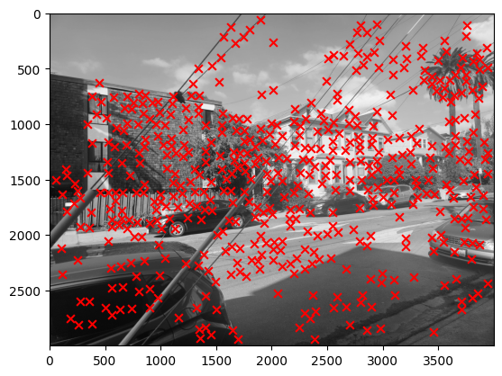
ANMS Keypoints
Feature Descriptors
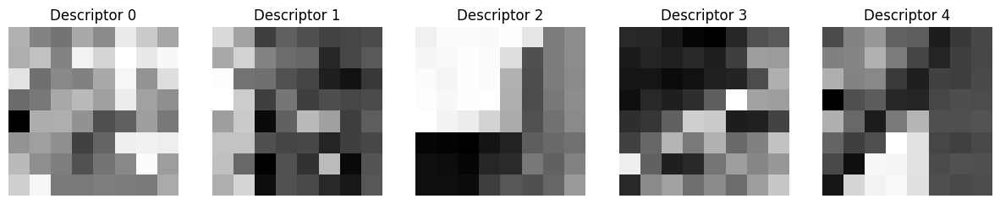
Feature Descriptors
Correspondence Visualization (RANSAC Input)
Image 1 Feature Correspondences
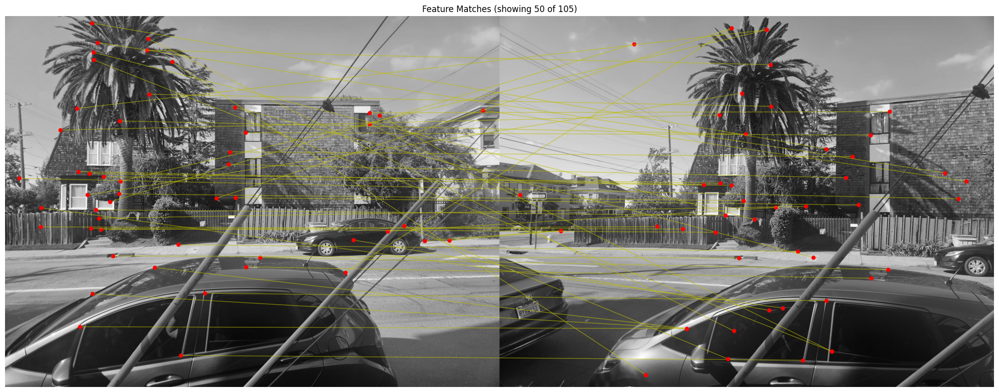
Image 1 Correspondences
Image 2 Feature Correspondences
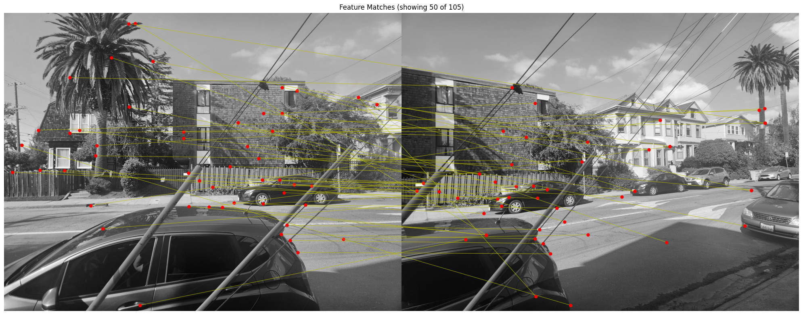
Image 2 Correspondences
Final Automatic Panorama
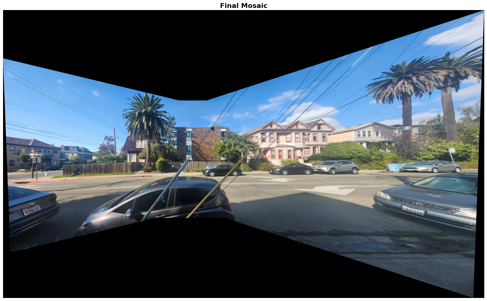
Final Blended Panorama using RANSAC Homography
Manual Panorama (For Comparison)
Final Blended Panorama using RANSAC Homography